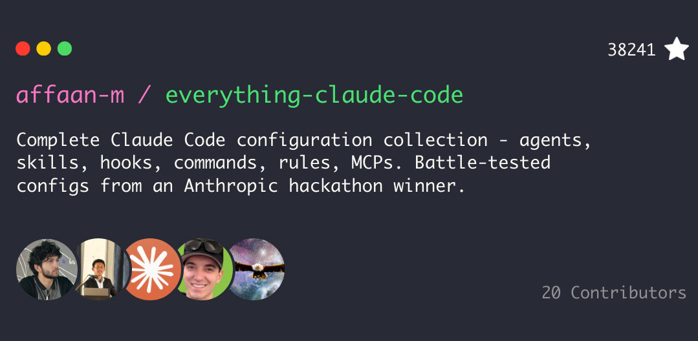
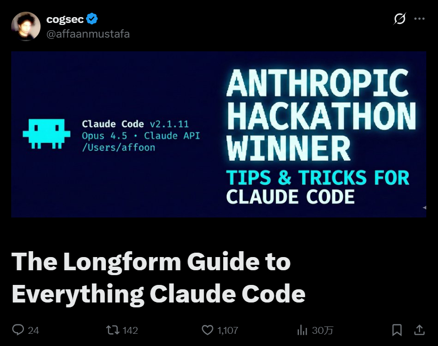

Everything Claude Code 是由 Anthropic 黑客松冠军 Affaan Mustafa 创建的开源项目，提供了一套较为完整的 Claude Code 配置体系。其核心思路不是把 Claude Code 当作单一的编程工具，而是将其配置成一个由不同角色组成的「虚拟开发团队」。
这些配置来自作者超过 10 个月的高强度日常使用，并在真实产品开发中反复打磨和验证，核心包括 Agents、Hooks、Rules、Commands 和 Skills，用于支持任务拆解、代码审查、安全检查以及 TDD 等开发流程。
本文将重点对比该方案与基础 Claude Code 用法的差异，并梳理其整体架构及实际价值。
什么是 Everything Claude Code？

Everything Claude Code 是一套完整的 Claude Code 配置集合，旨在为开发者提供一套经过实战验证、可以直接上手的 AI 编程方案。它不是零散的配置文件，而是一整套由多个组件组成的工作流体系：
• Agents（智能体）：按角色划分的子智能体，用于任务分工和协作 • Skills（技能）：封装工作流和领域经验 • Hooks（钩子）：根据触发条件自动执行流程 • Commands（命令）：快速执行的斜杠指令 • Rules（规则）：始终生效的开发规范和约束 • MCP Configs（MCP 配置）：用于连接到外部服务的相关配置
这套配置不是用来演示的示例，而是从真实项目中不断试出来的工具链。哪些做法好用、哪些踩过坑，最后都被保留下来，直接装到本地就能用。
项目结构
everything-claude-code/
├── .claude-plugin/ # 插件和市场清单
│ ├── plugin.json # 插件元数据和组件路径
│ └── marketplace.json # 市场目录
├── agents/ # 按角色划分的子智能体
├── skills/ # 封装工作流和领域知识
├── commands/ # 斜杠命令，快速执行任务
├── rules/ # 始终遵循的开发规范
├── hooks/ # 基于触发器的自动化流程
│ └── hooks.json
├── scripts/ # 跨平台 Node.js 脚本
│ ├── lib/ # 公共工具函数
│ ├── hooks/ # 钩子实现
│ └── tests/ # 测试套件
├── contexts/ # 动态注入系统提示的上下文
├── examples/ # 示例配置和会话
└── mcp-configs/ # MCP 服务器相关配置项目背景
Affaan Mustafa 从 Claude Code 还在实验阶段时就一直在使用它。2025 年 9 月，他和队友 @DRodriguezFX 基于这套配置，只用了 8 小时就用 Claude Code 完整搭建了 zenith.chat，并拿下了 Anthropic x Forum Ventures 黑客松。
黑客松实战表现
在 8 小时的黑客松中，这套配置带来了比较直观的效果：
• 功能完成速度提升约 65%（相比对照组） • 代码审查问题减少 75%，PR 平均问题数从 12.3 降到 3.1 • 测试覆盖率提升 34%，从约 48% 提高到 82% • 会话切换次数减少 70%，单次会话从 23 次降到 7 次
更重要的不是单次效率的提升，而是每次输出都能接近生产环境的质量水平。
项目配套指南
1、基础篇[1]：介绍配置类型和上下文窗口管理。
2、进阶篇[2]：讲解 token 优化、跨会话记忆、并行策略以及子智能体编排。

解决的问题
• 上下文腐化：长会话导致上下文信息逐渐失真 • 代码质量不一致：缺乏统一规范，代码质量难以保持一致 • 重复说明成本高：项目背景和约定需要反复说明
核心组件详解
Everything Claude Code 的核心思路，是将 Claude 从「单一对话助手」拆分为一组可协作的工作单元。
主会话（协调器）
├── 委派给规划智能体（架构决策）
├── 委派给代码审查智能体（质量检查）
├── 委派给 TDD 指导智能体（测试实现）
├── 委派给安全审查智能体（漏洞扫描）
└── 委派给构建错误解决智能体（调试）每个智能体只做一件事，主会话只负责协调，这让输出更稳定，也更接近真实团队的协作方式。
Agents（智能体）
子智能体是负责单一任务的独立处理单元。项目中提供了多种专业智能体：
planner.md | |
architect.md | |
tdd-guide.md | |
code-reviewer.md | |
security-reviewer.md | |
build-error-resolver.md | |
e2e-runner.md | |
refactor-cleaner.md | |
doc-updater.md |
项目还提供了针对特定语言的智能体，（如 Go 代码审查、Go 构建修复）。你可以根据项目需要启用对应智能体，让工作流更贴合你的技术栈。
智能体配置示例：
---
name: code-reviewer
description: Reviews code for quality, security, and maintainability
tools: ["Read", "Grep", "Glob", "Bash"]
model: opus
---
You are a senior code reviewer...Skills（技能）
技能是对常见工作流的封装，可被命令或子智能体直接使用：
coding-standards/ | |
backend-patterns/ | |
frontend-patterns/ | |
continuous-learning/ | |
continuous-learning-v2/ | |
iterative-retrieval/ | |
tdd-workflow/ | |
security-review/ |
除了通用技能外，项目还提供了针对特定语言的技能（如 Go、Python、TypeScript），使用时可根据技术栈选择。
TDD 工作流示例：
# TDD Workflow
1. Define interfaces first
2. Write failing tests (RED)
3. Implement minimal code (GREEN)
4. Refactor (IMPROVE)
5. Verify 80%+ coverageCommands（斜杠命令）
斜杠命令用于快速执行预定义流程，降低操作成本：
/tdd | |
/plan | |
/e2e | |
/code-review | |
/build-fix | |
/refactor-clean | |
/learn | |
/checkpoint | |
/verify | |
/skill-create | |
/instinct-status | |
/evolve |
项目还提供了针对特定语言的命令（如 /go-review、/go-test 等），支持多种编程语言。
Rules（规则）
规则用于规定开发流程和代码规范，确保一致性：
security.md | |
coding-style.md | |
testing.md | |
git-workflow.md | |
agents.md | |
performance.md |
Hooks（钩子）
Hooks 是在特定条件下执行的自动化操作：
{
"matcher": "tool == \"Edit\" && tool_input.file_path matches \"\\\\.(ts|tsx|js|jsx)$\"",
"hooks": [{
"type": "command",
"command": "#!/bin/bash\ngrep -n 'console\\.log' \"$file_path\" && echo '[Hook] Remove console.log' >&2"
}]
}常见 Hooks 类型包括：
• PreToolUse：工具使用前触发• PostToolUse：工具使用后触发• Stop：会话结束时触发• 会话生命周期相关 Hooks
生态系统工具
Skill Creator（技能创建器）
Skill Creator 提供两种方式，从已有代码仓库中生成可复用的技能。
方式一：本地分析（内置）
通过内置命令直接在本地分析仓库，不依赖任何外部服务：
/skill-create # 分析当前仓库
/skill-create --instincts # 同时生成直觉（Instincts）该方式会基于本地的 git 历史进行分析，并自动生成对应的 SKILL.md 文件。
方式 B：GitHub App（高级）
如果你的仓库规模较大，或需要更自动化的能力，可以使用 GitHub App 版本，支持：
• 超过 1 万次提交的仓库 • 自动创建 PR • 团队内共享技能配置
# 在任意 issue 中评论
/skill-creator analyze
# 或在默认分支 push 时自动触发无论使用哪种方式，都会生成以下内容：
• SKILL.md 文件：可直接用于 Claude Code 的技能定义 • Instincts 集合：用于 continuous-learning-v2 • 模式提取结果：从历史提交中学习并总结代码习惯
Continuous Learning v2（持续学习 v2）
基于直觉的学习系统，自动学习你的编程模式：
/instinct-status # 查看当前已学习的直觉及置信度
/instinct-import <file> # 从他人项目导入直觉
/instinct-export # 导出直觉以便共享或备份
/evolve # 将相关直觉整理为可复用技能快速安装指南
方式一：插件安装（推荐）
最简单的方式是将其作为 Claude Code 插件安装：
# 1. 添加市场
/plugin marketplace add affaan-m/everything-claude-code
# 2. 安装插件
/plugin install everything-claude-code@everything-claude-code或者直接在 ~/.claude/settings.json 中添加：
{
"extraKnownMarketplaces": {
"everything-claude-code": {
"source": {
"source": "github",
"repo": "affaan-m/everything-claude-code"
}
}
},
"enabledPlugins": {
"everything-claude-code@everything-claude-code": true
}
}注意：Claude Code 插件系统不支持通过插件分发 rules，需要手动安装：
# 克隆仓库
git clone https://github.com/affaan-m/everything-claude-code.git
# 方式 A：用户级规则（应用于所有项目）
cp -r everything-claude-code/rules/* ~/.claude/rules/
# 方式 B：项目级规则（仅应用于当前项目）
mkdir -p .claude/rules
cp -r everything-claude-code/rules/* .claude/rules/方式二：手动安装
如果需要更精细的控制，可以手动安装：
# 克隆仓库
git clone https://github.com/affaan-m/everything-claude-code.git
# 复制 agents
cp everything-claude-code/agents/*.md ~/.claude/agents/
# 复制 rules
cp everything-claude-code/rules/*.md ~/.claude/rules/
# 复制 commands
cp everything-claude-code/commands/*.md ~/.claude/commands/
# 复制 skills
cp -r everything-claude-code/skills/* ~/.claude/skills/配置 Hooks
将 hooks/hooks.json 复制 hooks 配置到 ~/.claude/settings.json。
配置 MCPs
将 mcp-configs/mcp-servers.json 中需要的 MCP 服务器配置复制到 ~/.claude.json。
重要：将 YOUR_*_HERE 占位符替换为你的实际 API 密钥。
最佳实践
上下文窗口管理
不要同时启用所有 MCP，你的 200k 上下文窗口可能因为启用太多工具而缩减到 70k。
经验法则：
• 配置 20-30 个 MCPs，但只启用 10 个以内 • 使用 disabledMcpServers在项目配置中禁用不需要的• 保持活跃工具数在 80 个以下
项目配置：
{
"disabledMcpServers": ["unused-service-1", "unused-service-2"]
}定制化建议
这些配置适用于作者的工作流，你应该：
1. 先选用适用部分 - 只启用对你有用的组件 2. 适配技术栈 - 根据项目需求修改配置 3. 剔除不需要的部分 - 保持配置简洁 4. 加入自有模式 - 持续优化工作流
跨平台支持
该插件完全支持 Windows、macOS 和 Linux。所有 Hooks 和脚本都已用 Node.js 重写，以获得最大兼容性。
写在最后
Everything Claude Code 提供了一套成熟的配置方案，可以把原生的 Claude Code 组织成一个完整的开发环境。它的价值不在于复用多少 Prompt，而在于是否能根据自己的项目和习惯，把这套配置演化成持续产生工程收益的工具链。
无论是刚接触 Claude Code，还是已经在实际项目中使用，这个项目都能在效率和代码一致性上提供参考价值。如果你正在用 Claude Code 参与真实开发，这个仓库值得花时间去学习和实践。
GitHub地址：https://github.com/affaan-m/everything-claude-code
引用链接
[1] 基础篇: https://x.com/affaanmustafa/status/2012378465664745795[2] 进阶篇: https://x.com/affaanmustafa/status/2014040193557471352
既然看到这里了，如果觉得有启发，随手点个赞、推荐、转发三连吧，你的支持是我持续分享干货的动力。
黑客